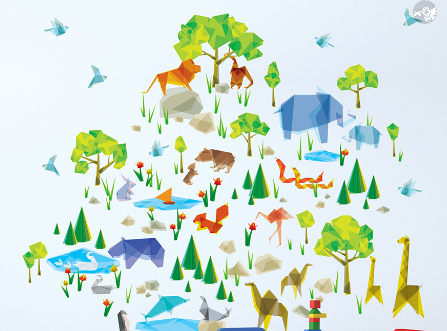
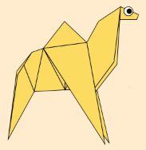
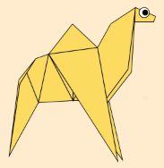
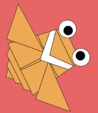
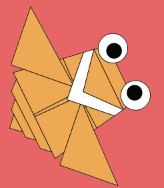
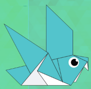
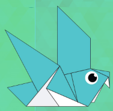

Hello there. I'm Vihaan. Lockdowns can be a lot boring. And sitting at home doing nothing?
Well I am here to teach you something interesting that will be a great passtime. What am I talking about?
I present to you the Japanese art of Origami. The perfect way to kill time and make your fingers more flexible.
Click On The Play Buttons For A Surprise...!
SOME OF THE ANIMALS I HAVE MADE TO ADD IN MY ZOO: Click on the images to know how to make them
The common pigeon also known as the rock pigeon, might be the first bird humankind ever domesticated.
They can find their way back to their nest from 1300 miles away.
They could identify visual patterns and therefore tell them apart.
They're more efficient multitaskers than people are.
Bears can reach a weight of between 150 and 370 kilogrammes depending on age and season.
In the wild, these omnivores spend up to 16 hours a day looking for food, which is reflected in the saying 'hungry as a bear'.
Brown bears in the wild are mainly active at dusk and at night.
Bears have a particularly good nose: their sense of smell enables them to sniff food at a distance of several kilometres.
So my creative origamites, hope you enjoyed all this. You have learnt a lot of things. You can now make your own zoo of animals. just like the one i made below

You've made it this far. Please be sure to give me a follow. Click on the "Menu" to follow me and know how i learnt origami. Thanks. Bye till next time :)
 


 

 
